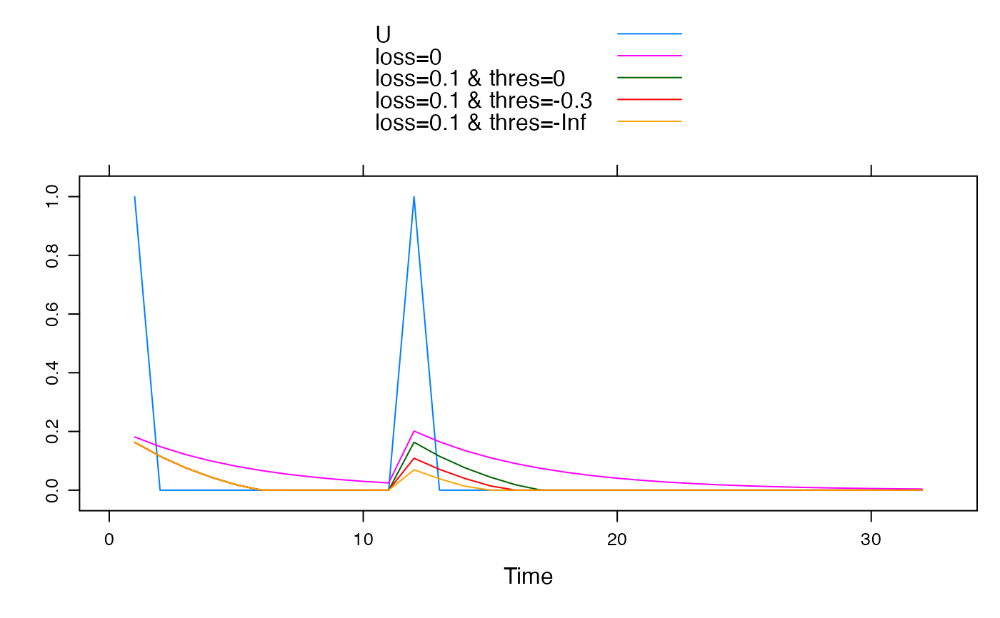
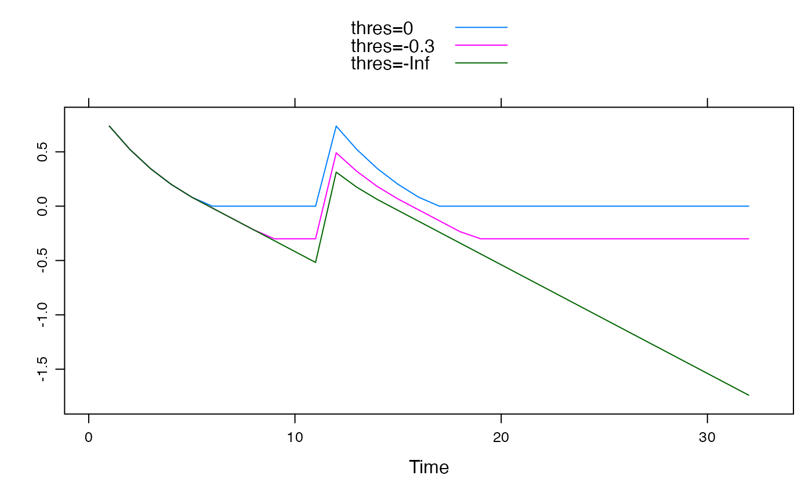

An exponential store (linear transfer function) which has a loss term, produces no flow when the store drops below a level, and can therefore model longer-term disconnection of a store from streamflow.
leakyExpStore.sim(x, tau, loss, thres, init = 0, return_components = FALSE)
Arguments
| x | input time series. |
|---|---|
| tau | Time constant for flow from exponential store. |
| loss | Constant loss that occurs while the value of the store is
greater than |
| thres | Trigger level to turn off loss, which can be interpreted as a store capacity. |
| init | Initial value of exponential store |
| return_components | whether to return store value (G) as well as flow (Q) |
Value
the flow time series with the same dimensions and time windows as
the input x. If return_components = TRUE, it will have
multiple columns named G and Q.
Details
Storage is increased by effective rainfall and decreased by flow and losses. $$G[k] = G[k-1] + U[k] - Q[k] - L[k]$$
Flow is proportional to storage $$Q[k] = a G[k], G[k]>0$$ $$Q[k] = 0, otherwise$$
Loss switches off at some threshold, as a piece-wise continuous function. $$L[k] = L, G[k]>T+L (with T<=0)$$ $$L[k] = G[k] - T, T+L > G[k] > T$$ $$L[k] = 0, G[k]<T$$
See also
Author
Joseph Guillaume joseph.guillaume@anu.edu.au with advice from Barry Croke
Examples
U <- ts(c(1, rep(0, 10), 1, rep(0, 20))) ## Without a loss, equivalent to expuh ## Loss threshold has no effect all.equal(leakyExpStore.sim(U, 5, loss = 0, thres = 0), expuh.sim(U, tau_s = 5))#> [1] TRUE## With losses stopping when flow stops, equivalent to expuh with a loss all.equal( leakyExpStore.sim(U, 5, loss = 0.1, thres = 0), expuh.sim(U, tau_s = 5, loss = 0.1) )#> [1] TRUE## Plot of unit hydrographs xyplot(cbind( "U" = U, "loss=0" = expuh.sim(U, tau_s = 5), "loss=0.1 & thres=0" = expuh.sim(U, tau_s = 5, loss = 0.1), "loss=0.1 & thres=-0.3" = leakyExpStore.sim(U, 5, loss = 0.1, thres = -0.3), "loss=0.1 & thres=-Inf" = leakyExpStore.sim(U, 5, loss = 0.1, thres = -Inf) ), superpose = TRUE)## Time series plot of value of store xyplot(cbind( "thres=0" = leakyExpStore.sim(U, 5, loss = 0.1, thres = 0, return_components = TRUE )[, "G"], "thres=-0.3" = leakyExpStore.sim(U, 5, loss = 0.1, thres = -0.3, return_components = TRUE )[, "G"], "thres=-Inf" = leakyExpStore.sim(U, 5, loss = 0.1, thres = -Inf, return_components = TRUE )[, "G"] ), superpose = TRUE)## Time series of loss xyplot(cbind( "thres=0" = leakyExpStore.sim(U, 5, loss = 0.1, thres = 0, return_components = TRUE )[, "L"], "thres=-0.3" = leakyExpStore.sim(U, 5, loss = 0.1, thres = -0.3, return_components = TRUE )[, "L"], "thres=-Inf" = leakyExpStore.sim(U, 5, loss = 0.1, thres = -Inf, return_components = TRUE )[, "L"] ), superpose = TRUE)